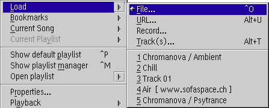
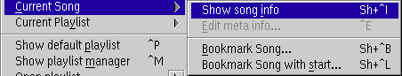
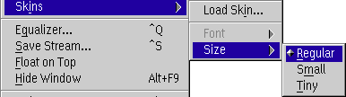

Load...

Loads one or multiple files, an URL from the Internet for streaming, CD
tracks or one from last used items.

- Add current as bookmark...
- Add the currently loaded file to your bookmarks.
- Edit Bookmarks...
- Open the current bookmarks in the playlist editor.
- more entries
- Load one of your bookmarks into the player.
As you see in the example you can navigate into playlist bookmarks. If you click on a playlist entry without opening the sub menu then the entire playlist is loaded.
Current song

- Show song info
- Show a dialog with informations to the current song.
- Edit file info...
- Edits the song info of the currently loaded file.
- Bookmark song...
- Add the currently loaded file to your bookmarks.
- Bookmark song with start...
- Add the currently loaded file to your bookmarks and store the current playing position also.
Current playlist

- Show playlist info
- Show a dialog with informations to the current playlist.
- Show detailed view
- Opens the currently loaded playlist in the playlist editor.
- Show tree view
- Opens the currently loaded playlist in the playlist manager view.
- Bookmark playlist...
- Add the currently loaded playlist to your bookmarks.
- Bookmark playlist with location...
- Add the currently loaded playlist to your bookmarks and store the currently playing song and position also.
- Save...
- Save the currently loaded playlist.
Show default playlist
Shows the default playlist window.
Show playlist Manager
Shows the Playlist Manager.
Open playlist...
Opens the playlist editor for a file.
Properties...
Displays PM123's Configuration dialog.
Playback
Controls playing process. This is self-explanatory
Plug-ins
Gives easy access to the plug-ins' configuration dialogs. Checked plug-ins are enabled or activated.
Skins

- Load Skin...
- Load a new skin into the player.
- Font
- A sub menu which allows you to select from two fonts.
This is disabled if you are not using skinned fonts. - Size
- A sub menu which allows you to select the size of the player from 3 predefined sizes.
Save Stream
Save the uncompressed stream from the decoder plug-in. This allows you to save Internet streams.
Float on top
Toggles 'float on top' option, which allows PM123 to float above all windows.
Hide window
Hides the player window. PM123 can be restored by selecting it from the window list.